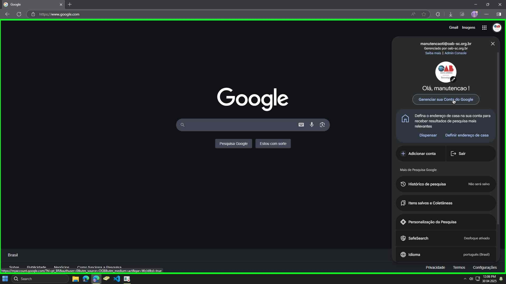
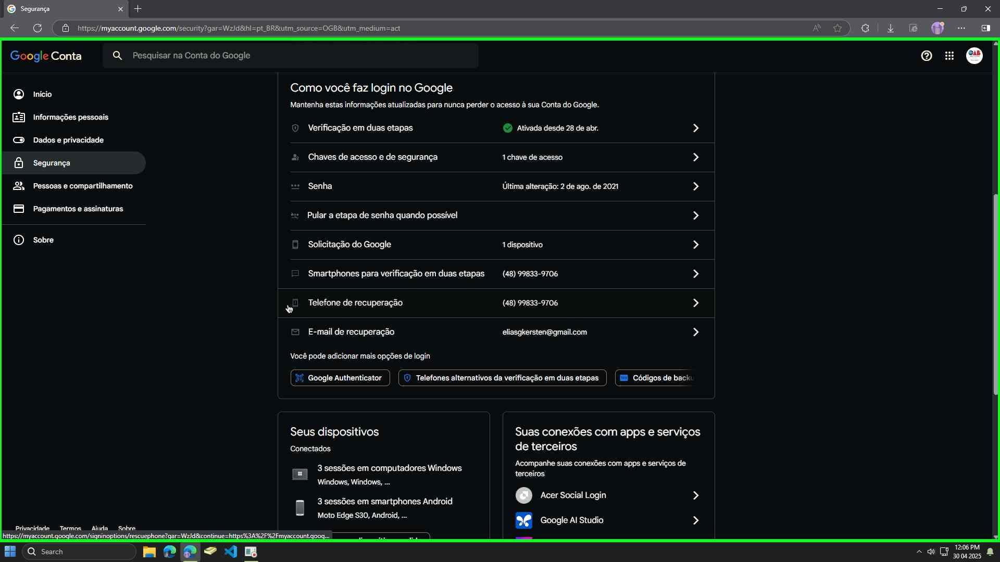
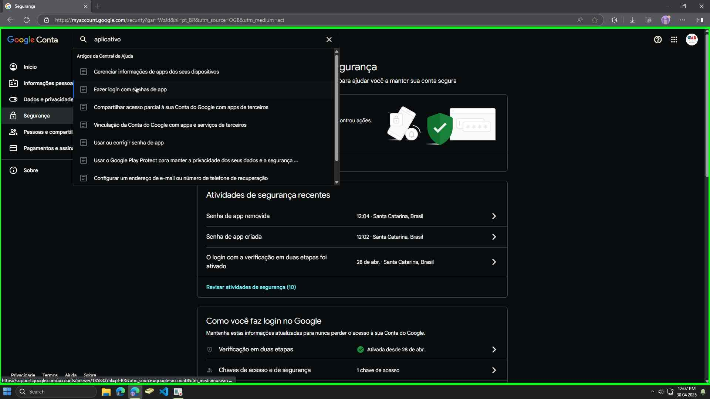
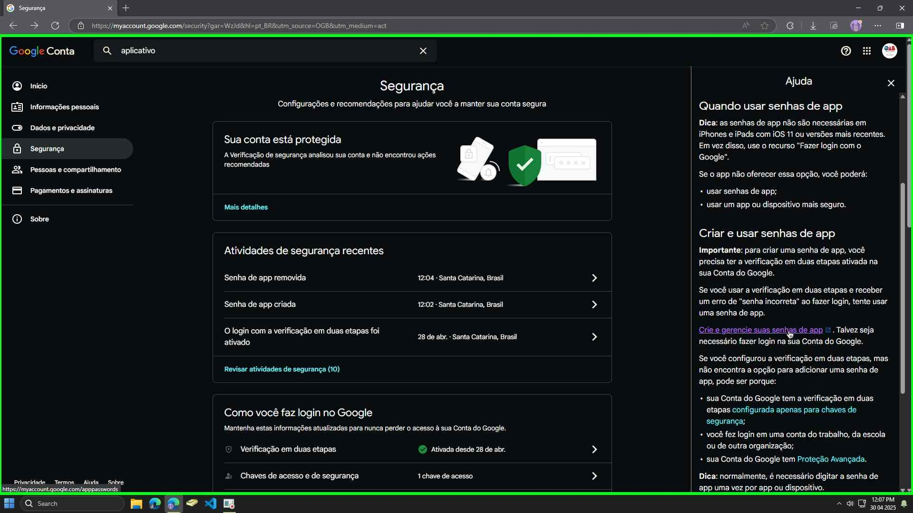
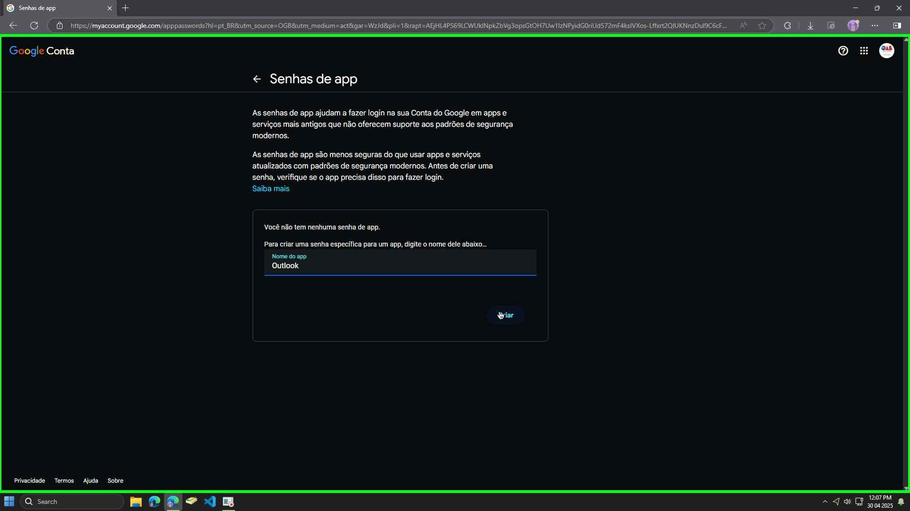
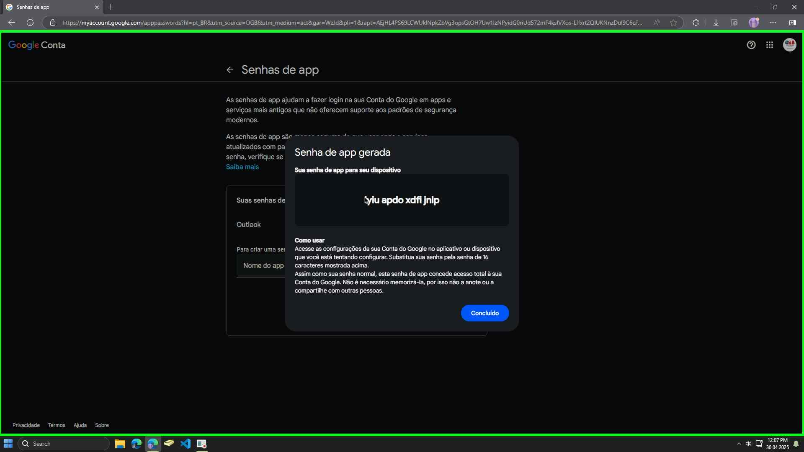

🏠 Pagina Inicial
Use este tutorial para gerar uma senha específica para o Outlook 2013 ou anterior, necessária após o Google desativar o login menos seguro.
1. Acesse sua Conta Google: https://myaccount.google.com/
2. No menu à esquerda, clique em 'Segurança'.
3. Role a página até a seção 'Como fazer login no Google'. Clique em 'Verificação em duas etapas'. Siga as instruções para ativá-la, caso ainda não esteja ativa. Este passo é obrigatório para criar senhas de app.
4. Após ativar a verificação em duas etapas, volte para a página 'Segurança'. Na seção 'Como fazer login no Google', procure e clique em 'Senhas de app'. (Se não encontrar, pode estar dentro de 'Verificação em duas etapas').
5. Você pode precisar digitar a senha da sua conta Google novamente.
6. Na tela 'Senhas de app', clique em 'Selecionar app' e escolha 'E-mail'. Em 'Selecionar dispositivo', escolha 'Computador Windows' (ou digite um nome personalizado como "Outlook Antigo"). Clique no botão 'Gerar'.
7. Uma janela aparecerá com a senha de app gerada (16 letras amarelas, sem espaços). Copie esta senha imediatamente. Ela não será exibida novamente.
8. Abra o Outlook (2013 ou inferior). Quando ele solicitar a senha da sua conta Google (Gmail), cole a senha de app de 16 letras que você acabou de gerar no campo de senha, em vez da sua senha normal do Google. Marque a opção para salvar a senha, se disponível.
9. O Outlook deve agora conectar-se à sua conta Gmail com sucesso.